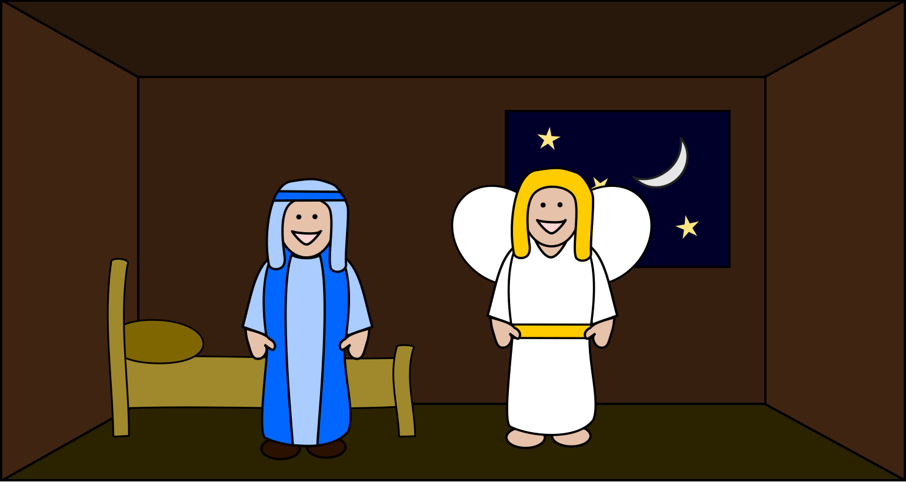
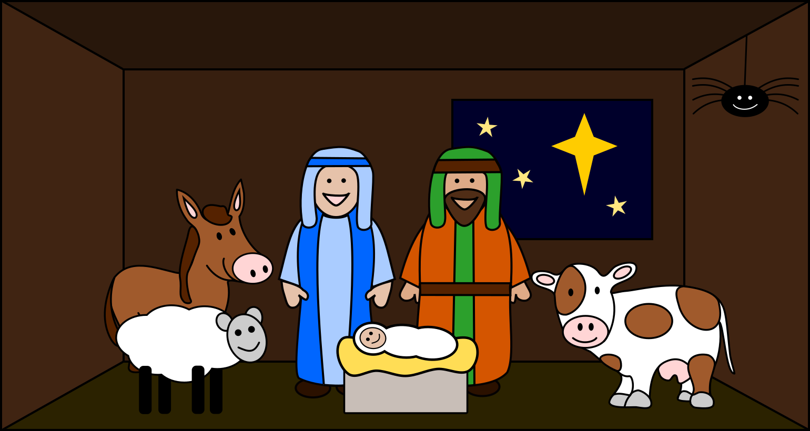
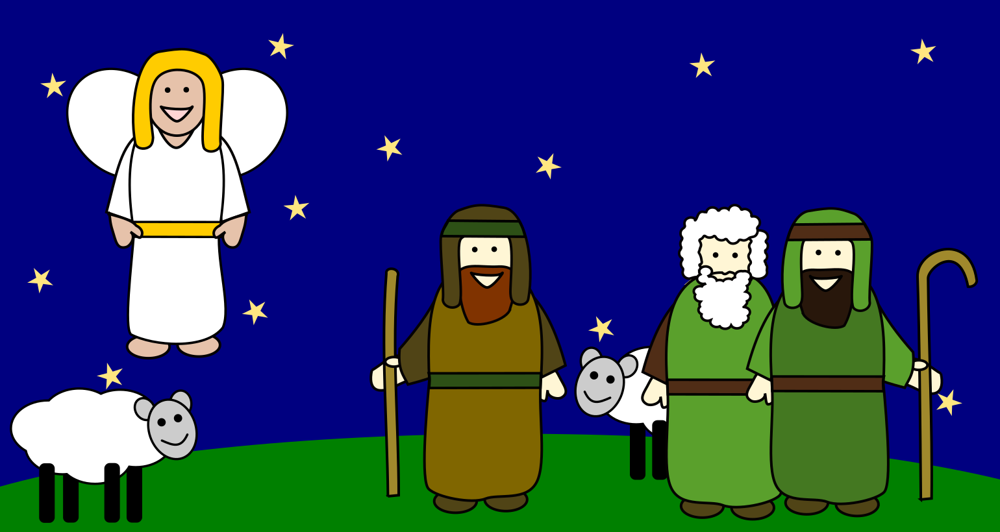
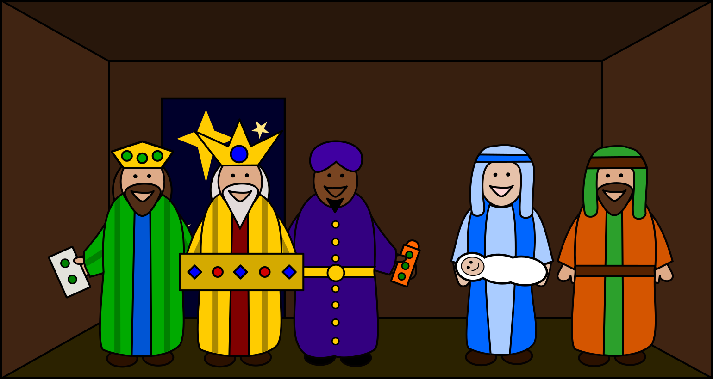

Read The Christmas Story
Long ago, about 2000 years, when King Herod ruled Judea (now part of Israel), God sent the angel Gabriel to a young women who lived in the town of Nazareth. The girl's name was Mary and she was engaged to marry a man named Joseph.
The angel Gabriel said to Mary: "Peace be with you! God has blessed you and is pleased with you." Mary was very surprised by this and wondered what the angel meant.
Gabriel said to her "Don't be afraid, God has been very kind to you. You will become pregnant by the Holy Spirit and give birth to a baby boy and you will call him Jesus. He will be God's own Son and his kingdom will never end." Mary was very afraid but she trusted God. "Let it happen as God chooses." She replied to the angel.
Gabriel also told Mary that her cousin Elizabeth, who everyone thought was too old to have children, was pregnant with a baby boy. He would be called John and, as an adult, he would prepare people to welcome Jesus.
Gabriel had told Zechariah, Elizabeth's husband, about their unexpected son when Zechariah was in the Jewish Temple working as a Priest. Zechariah didn't believe the angel so Gabriel had made him dumb until after John was born!
Knowing her cousin was pregnant, Mary said goodbye to her family and friends and went to visit Elizabeth and Zechariah. Elizabeth was very happy to see Mary. She knew that Mary had been chosen by God to be the mother of his Son.
When Elizabeth saw Mary arriving, she knew that something very special had happened to Mary. She said: "God has blessed you above all women, and your child is blessed. I am so honored, that the mother of my Lord is visiting me. When I heard your greeting, the baby inside me jumped for joy. You are blessed because you believed that the Lord would do what he said."
Mary was also very excited and sang a special song of joy: "With all my heart I praise the Lord, and I am glad because of God my Savior. God cares for me, his humble servant girl. From now on, all people will say God has blessed me. God the mighty one has done great things for me, and his name is holy. He always shows mercy to everyone who worships him. The Lord has used his powerful arm to scatter those who are proud. God drags strong rulers from their thrones and puts humble people in places of power. God gives the hungry good things to eat, and sends the rich away with nothing. God helps his servant Israel and is always merciful to his people. The Lord made this promise to our ancestors, to Abraham and his family forever!"
Mary stayed with Elizabeth for about three months and then returned home to Nazareth.
Joseph was worried when he found out that Mary was expecting a baby before their marriage had taken place. He wondered if he should cancel the wedding altogether. Then an angel appeared to Joseph in a dream and said: "Don't be afraid to marry Mary. She has been chosen by God to be the mother of his Son. The baby will be called Jesus and he will save his people."
When Joseph woke up, he did what the angel had told him to do and married Mary.
At this time, the land where Mary and Joseph lived was part of the Roman Empire. The Roman Emperor Augustus wanted to have a list of all the people in the empire, to make sure they paid their taxes. He ordered everyone to return to the town where their families originally came from, and enter their names in a register (or census) there.
Mary and Joseph travelled a long way (about 70 miles or 115km) from Nazareth to Bethlehem, the town where Joseph's family came from. Most people walked but some people had a donkey to help carry the goods needed for the journey. Joseph and Mary travelled very slowly because Mary's baby was due to be born soon.
When they reached Bethlehem they had trouble finding somewhere to stay. So many people had come to register their names in the census, that every house was full and every bed was taken in all of the spare rooms.
The only shelter that they could find was with the animals; in a cave, stable or the bottom floor of a house where the family animals were kept.
In this unclean and probably smelly place Mary gave birth to Jesus, the Son of God.
It was the custom to wrap newborn babies tightly in a long cloth called 'swaddling clothes'. People thought it helped you grow straight arms and legs! Jesus' bed was the manger, the animal's feeding through.
Out in the hills and fields outside Bethlehem, some shepherds were looking after their sheep through the long night. But as the new day began, an angel suddenly appeared and the glory of God shone around the angel.
The shepherds were very, very, very scared, but the angel said: "Don't be afraid. I have good news for you and everyone. Today, down in Bethlehem, the Saviour sent by God has been born. You will find him as a baby wrapped in cloth and lying in a manger."
Then many more angels appeared, lighting up the sky. All the angels sang praising God: "Glory to God in highest, and peace to everyone on earth." When the angels had gone, the shepherds said to one another: "Let's go to Bethlehem and see what's happened."
So the shepherds went to Bethlehem and found Mary and Joseph. The baby Jesus was lying in a manger just as they had been told. When they saw Jesus, they told everyone what the angel had said to them. The people who heard their story were amazed. Then the shepherds returned to their sheep, praising God for sending his Son to be their Saviour.
When Jesus was born, a brand new bright star appeared in sky. Some Wise Men in faraway countries saw the star. They were very clever men that studied the stars and had read in very old writings that a new star would appear when a great and special king was born. They set out to find the new king and bring him gifts.
The Wise Men followed the star towards the country of Judea. When they got to the capital, Jerusalem, they began to ask people: "Where is the child who is born to be king of the Jews? We've seen his special star and have come to see him."
When Herod, the king of Judea, heard this it made him very angry to think that someone might be going to take his place as king. So he called the Wise Men to the palace and tried to trick them by saying: "Please go on following the star until you find the new king. When you have found him, let me know where he is, so that I can go and worship him." But Herod really had an evil plan to kill the new king and wanted to use the Wise Men to find him.
The Wise Men followed the star towards Bethlehem (where the old writings said that the king would be born). It seemed to stop and shine down directly over the house where Jesus and his family now were living.
The Wise Men entered the house and found Jesus with Mary. They bowed down and worshipped him. The Wise Men spread the the gifts they had brought before Jesus. The gifts were gold, frankincense and myrrh.
In a dream the Wise Men were warned by God about Herod's trick and evil plan, so they returned home to their countries in the East by a different way.
When the Wise Men had gone, an angel appeared to Joseph in a dream and said: "Get up quickly and escape with Jesus and Mary to Egypt. Stay there until I tell you. Herod is going to search for Jesus to try and kill him." So Joseph got up, took Jesus and Mary, and during the night they left for Egypt, where they stayed until Herod died.
When Herod realized that he had been tricked by the Wise Men, he was furious and he gave orders to kill all the boys aged two or younger in Bethlehem and the surrounding area. This was to try and kill the new King, as his plan to find the location of the new king from the Wise Men had failed.
After Herod had died, Joseph had another dream in which an angel appeared to him. The angel said, "Get up, take Jesus and Mary and go back to Israel, for the people who tried to kill Jesus are dead."
So Joseph got up, took Jesus and Mary and they went back to Israel. But when he heard that Herod's son was now king of Judea, Joseph was afraid to go there. So instead they returned to live in their old town of Nazareth.